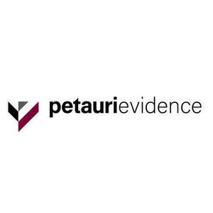

Trade Mark Journal No.2025/015 11 April 2025
UK00004175507 18 March 2025 (9,35,41,42)
Mark 1

Mark 2
- Class 9
- Downloadable computer software and apps to enable users to maintain, exchange, and access medical information and electronic health records; computer software to enable searching and retrieval of data; interactive database software; computer software applications; application software; artificial intelligence software for analysis; business intelligence software.
- Class 35
- Business management consulting services to pharmaceutical and biotechnology companies to provide advice and business strategies regarding therapies, diagnostics, clinical solutions, regulatory guidance, health economics design, pricing, launch planning, access strategy, patient access, back office support, data analytics, database management, promotional effectiveness, and market adoption; business strategy and planning services; outsourcing consulting services; arranging and facilitating service contracts; data management services; economic forecasting and analysis services; business data analysis services; market analysis and surveys in the fields of healthcare, pharmaceuticals and biotechnology; drawing up of business statistical information; market research services; pricing analysis and surveys in the fields of healthcare, pharmaceuticals and biotechnology; business and pharmaceutical consultancy services; consultancy services in respect of health economics and outcomes research; analyzing and compiling business data for the effective planning and management of value strategy, evidence generation, and communication in the fields of health economics and outcomes research (heor), and pharmaceutical pricing.
- Class 41
- Training services in the field of healthcare, pharmaceuticals and biotechnology; workshops in the fields of healthcare, pharmaceuticals and biotechnology; issue of publications.
- Class 42
- Non-downloadable computer software for managing consultants, pricing, contracts, launch planning, data analysis, and managing and providing patient access for pharmaceutical and biotechnology companies; software development services; software as a service (SaaS) services featuring software for database management and that enables users to maintain, exchange, and access medical information and electronic health records; online hosting of software in the nature of portals and databases for use by others for the management of data and information in the pharmaceutical and biotechnology industries; consultancy, support and engineering services relating to computer software, computer systems and information technology; information technology services for the pharmaceutical and healthcare industries; industrial analysis and research services; platform as a service (PAAS) in the field of healthcare, pharmaceuticals and biotechnology; Scientific and technological services relating to technological innovation forecasting research in the fields of pharmaceuticals and biotechnology; analyzing clinical data in the fields of healthcare and pharmaceuticals; analyzing clinical data in healthcare databases, health economics and outcomes research (heor) in the fields of healthcare and pharmaceuticals; conducting clinical trials in the fields of healthcare and pharmaceuticals, accessing and analyzing competitive intelligence information in the fields of healthcare and pharmaceuticals; organizing, managing, and tracking data during development of a drug and over the life of a drug, creating and updating clinical guidelines in the fields of healthcare and pharmaceuticals; personalizing treatment options in the fields of healthcare and pharmaceuticals, and patient identification in the fields of healthcare and pharmaceuticals; software as a service (saas) services featuring software for the management of projects, deliverables, budgets, evidence, and business data, the foregoing for use in connection with health economics and outcomes research (heor); providing scientific consulting services, research, and analysis in relation to health economics and outcomes research (heor) and real-world evidence (rwe), provided to clients in the healthcare industry.
PETAURI UK HOLDCO LIMITED
Representative: CMS Cameron McKenna Nabarro Olswang LLP